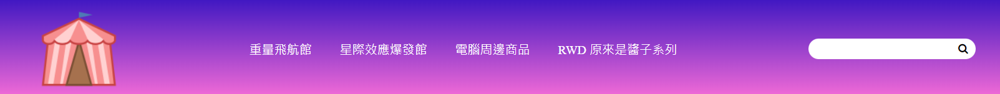
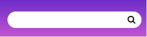
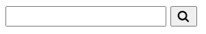
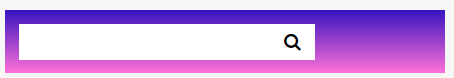
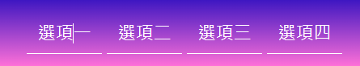

Source Url
學習點
1. 修改原生 input 和按鈕的樣式
課堂上提供的樣板呈現的搜尋欄位整體是長的像下面這樣

如果，沒有加入任何 css 樣式修改，單純原生 input 輸入欄位加上 button 按鈕樣式的話，HTML 的寫法如下，
要注意一下，按鈕裡面的放大鏡是 Font Awesome 提供的圖示。
1 | <div class="container"> |
畫面會長的像下面這樣

接下來就來修改它們吧。
第一，我們先把背景的 .container 的背景色加上一些色彩，不然，我們等等改 input 和 button 的樣式，會看不太清楚
1 | .container { |
第二，我們讓 input 欄位和 button 緊緊的合併在一起
1 | .header-search { |
目前的畫面會長的像下面這樣
第三，會看到上面呈現的畫面，input 欄位和 button 之間，有黑色線在它們之間，我們想要把它們消除掉，所以，加入以下內容
1 | .header-search input, button { |
經過以上的樣式，畫面會變成這樣

第四，接著就是要分別處理圓角的效果，所以，對 input 欄位和 button 分別加入圓角的 css 樣式
1 | .header-search input { |
畫面就會變成這樣囉
第五，但是，當點擊 input 欄位的時候，會有原生的外框線被加上去，這是我們不想要的，所以，加入以下的語法就可以取消該外框線的效果
1 | .header-search input:focus { |
經過以上幾步驟後，就達成樣板提供的搜尋欄位的樣式囉~
2.導覽列選項 hover 效果
我們想要導覽列選項有以下動畫的 hover 的效果
分析一下，以上動畫效果總共有兩種，一種是選項的底下會從中間長出來到兩端，第二種選項會往上移一點
效果一: 選項的底下會從中間長出來到兩端
那我們就先來研究這個效果吧。
我們會用偽元素 :after 來達成。
第一，先來寫基本的偽元素樣式
1 | .main-header .main-nav a { |
經過以上的 css 內容，會發現畫面長成這樣
會發現，有一條貫穿整個版面水平方向的白線在選項上方，
會長的像這樣的原因是，當我們對偽元素使用 position: absolute 時，它會變成浮動的脫離原本父層寬度，再加上有設定 left: 0 和 right:0 會讓它撐滿整個寬度，這就是它為什麼變成貫穿整個版面水平方向的白線的原因。
接下來，我們就要來解決這個問題，其實我們只要對偽元素的父層 .main-header .main-nav a 加上 position: relative，告訴偽元素它的位置是相對於 .main-header .main-nav a 做設定的。接著，在對偽元素加上 bottom: -5px ，就可以讓它位在選項的下方囉。
1 | .main-header .main-nav a { |
加上這兩行之後，就可以達到下面的效果囉

第二，為它加上左右長大的效果
我們來修改一下偽元素的 css 內容
1 | .main-header .main-nav a:after { |
上面改的這兩行的效果有點像是將偽元素收攏成位在正中間的一個點。
接著，在 hover 到選項上的時候，再將偽元素向左右撐滿，所以，加入以下的內容
1 | .main-header .main-nav a:after { |
經過以上的操作，第一個效果就完成囉~
效果二: 選項往上滑動
這個效果比較單純的，其實，只要對選項加入 transform: translateY 的設定就可以達成囉。
程式碼如下
1 | main-header .main-nav a { |
⭐ 無法觸發 transform: translateY() 效果
但是，加入以上的內容之後，會發現 hover 過去選項並沒有往上滑動的效果。
主要是因為選項們都是 a 連結，而 a 連結是 inline 元素，詳細一點說它是 non-replaced inline element，是無法使用 transform 效果的 (可參考文章一、文章二)。
所以，我們只要將 a 連結的 display 屬性改成 inline-block 就解決囉。